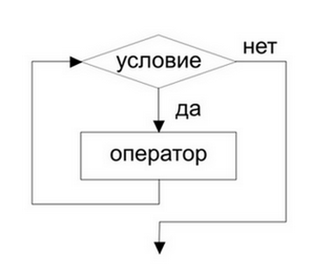
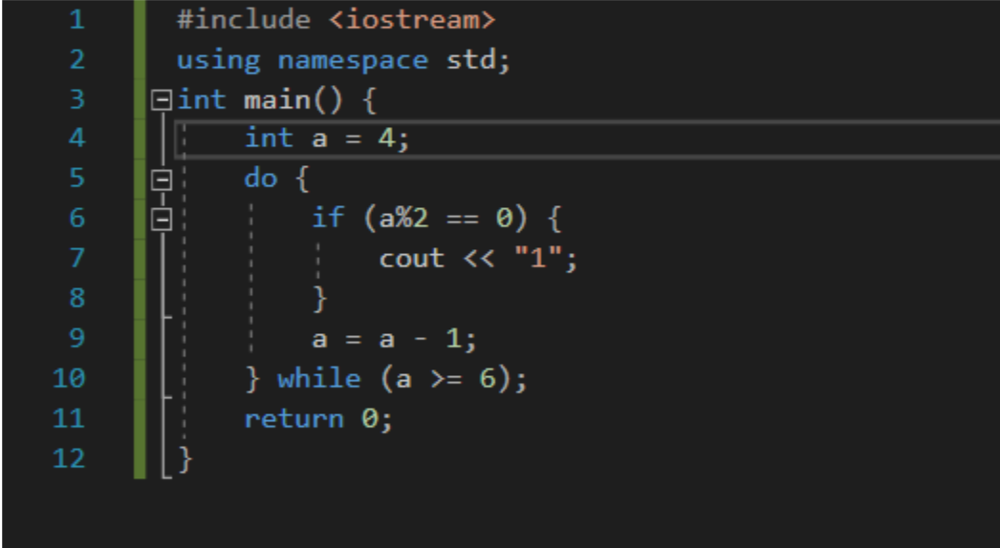

Циклы на C/C++
Знакомство с циклами является одним из первоначальных этапов изучения программирования(алгоритмов). Их изучение занимает совсем немного сил и времени, так как эта конструкция не представляет из себя ничего сложного, и уверенно освоить циклы может любой новичок вне зависимости от того, на каком ЯПе он прогает.
В каких ситуациях могут пригодиться циклы ? Как их использовть на C/C++?
Я не буду давать строгого определения этому термину, так как не считаю, что это входит в мои компетенции. Однако изложить суть циклов не составит никакого труда.
Вы когда нибудь видели, как на армейской подготовке молодые солдаты проходят полосу препятствий. «Возьмитесь» за оба конца этой полосы и соедините их в кольцо.(концентрические окружности). Теперь солдаты будут вечно бегать по этой замкнутой полосе. Они будут выполнять одни и те же действия. Раз за разом. Это и есть цикл! На псевдокоде это будет звучать так :
пока всегда
бежать
конец
Позже мы вернемся к нашим вымышленным бедным солдатам и спасем их ! А пока поговорим о прогрммировании. Цикл является одной из базовых алгоритмических конструкций и выглядит так
Табличка тут

У нас есть определенный набор команд в блоке оператор. Мы хотим сделать так, чтобы эти команды повторялись пока есть какое-то условие. Если условие выполняется, то программа выполнит эти команды и вернется к обратно в начало цикла.
Циклы в каждом языке оформляются по-разному. Мы будем говорить о языке C/C++.
Есть 2... Нет, 3 ! Или все же 2 ?..
В общем и целом, есть 2 вида циклов в нашем языке.
1) while(do while)
2) fo
Цикл WHILE(DO WHILE)
Думаю нам уже можно переходить к практике, чтобы наглядно увидеть циклы в действии !
ШАГ 1 : объявим и иницилизируем переменную
ШАГ 2: напишем сам цикл while

В круглых скобках у нас будет записываться условие, выполнение которого, будет вести к успешному выполнению команд в операторе.
ШАГ 3: напишем условие и команды
Напишем небольшую программу, которая будет выводить «1» каждый раз, как число будет четным.
Напоминание : число является четным, когда остаток от деления этого числа на 2 равен 0.
Тогда,
Использование условия(того что в круглых скобках) дает нам возможность выйти из цикла и завершить программу.
Чтобы это условие выполнилось мы стали уменьшать с каждой итерацией(проходом) цикла переменную.
Иначе мы бы зациклились(спасибо, кэп)!
Ну и вот реазультат действия такой прогаммы:
Возварщаясь к солдатам, мы теперь можем избаваить их от вечных бессмысленных мук. Все что нам нужно - поставить им условие. Пусть идут отдыхать в казарму, а мы направляемся к циклу for ! Я что-то забыл ? Ах да, слышу ваше недовольство, где же do while ?
Do while является логическим дополнением цикла while. Вот как будет выглядеть наша программа теперь !
И вот результат работы программы :
Ничего не поменялось ? Именно ! Ничего и не должно было меняться. Но в чем же заключается разница между этими циклами ? Проследить её можно, если мы кое-что подправим :

Изменили мы начальное значение переменной и условие выхода на из цикла.
Ну и вот вам разница :
На вопрос почему вы получите такой ответ : do заставляет программу сначала выполнить команды в цикле вне зависимости от внешнего условия(цикла). Вот теперь точно переходим к конструкции for!
Цикл for
Немного серьезнее сейчас, ведь по-другому с циклом for нельзя. Выглядит он следующим образом :
Чаще всего он используется вместе с счетчиком. Это переменная, меняющая свое значение после каждой
итерации цикла. Условие выхода из цикла тогда, тоже связано с этой переменной.
С этим циклом наша предыдущая программа выглядила бы так :
И вот результат работы программы :
На этом я пожалуй закончу. Я надеюсь вы смогли понять смысл использования циклов.
Практикуйтесь и применяйте их на практике, удачи !
Используемый язык : C++
Примеры были написаны в IDE : Microsoft Visual Studio 2019
Текст написал : Корбут Руслан